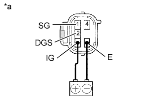
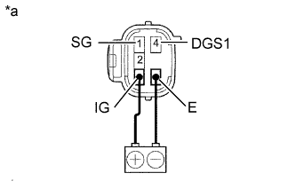

SMOG VENTILATION SENSOR > INSPECTION |
| 1. INSPECT SMOG VENTILATION SENSOR |
|  |
HC, CO
| *a | Component without harness connected (Smog Ventilation Sensor) |
Connect the battery positive (+) lead to terminal 3 (IG) and the negative (-) lead to terminal 6 (E).
Allow exhaust gas (HC, CO) to travel to the sensing portion of the smog ventilation sensor and measure the resistance between terminals 1 (SG) and 2 (DGS).
|  |
NOx
| *a | Component without harness connected (Smog Ventilation Sensor) |
Connect the battery positive (+) lead to terminal 3 (IG) and the negative (-) lead to terminal 6 (E).
Allow exhaust gas (NOx) to travel to the sensing portion of the smog ventilation sensor and measure the resistance between terminals 1 (SG) and 4 (DGS1).